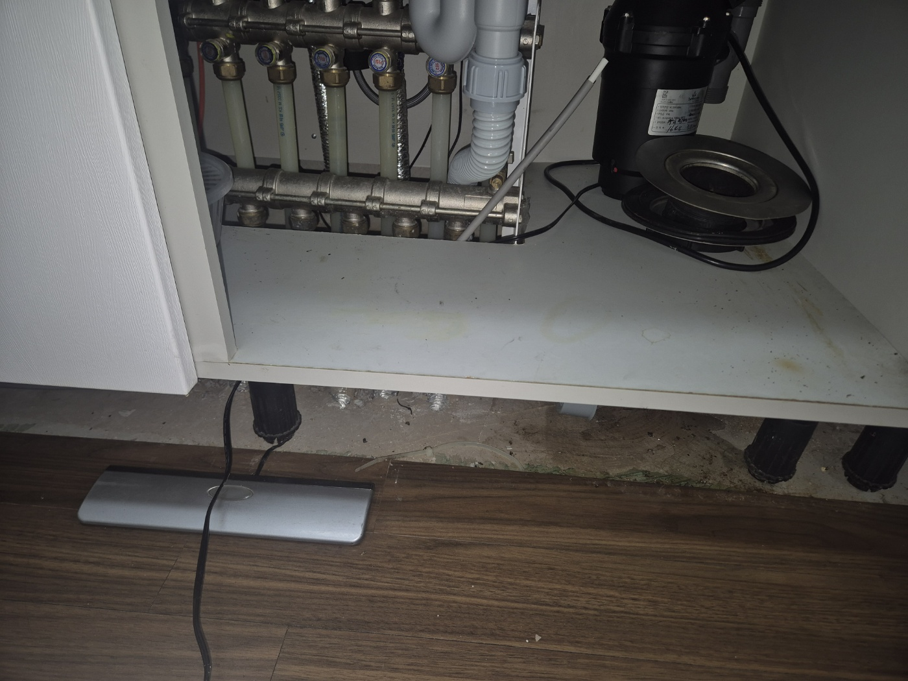
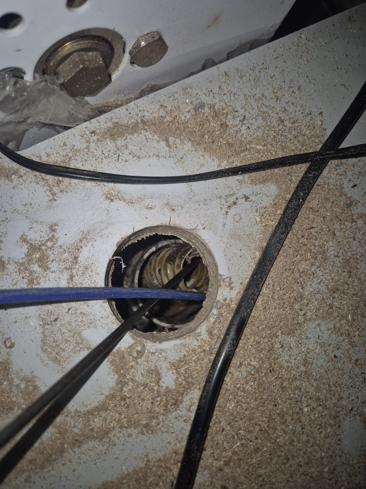
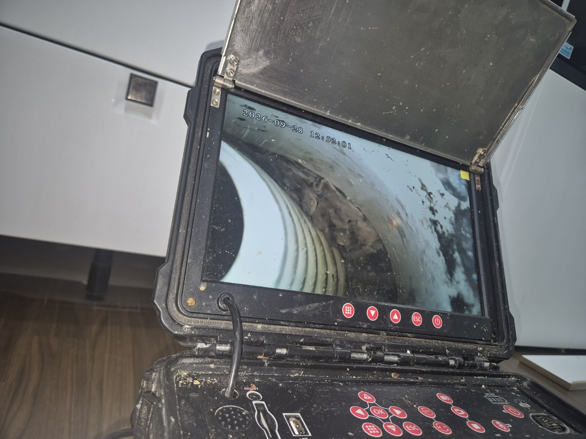
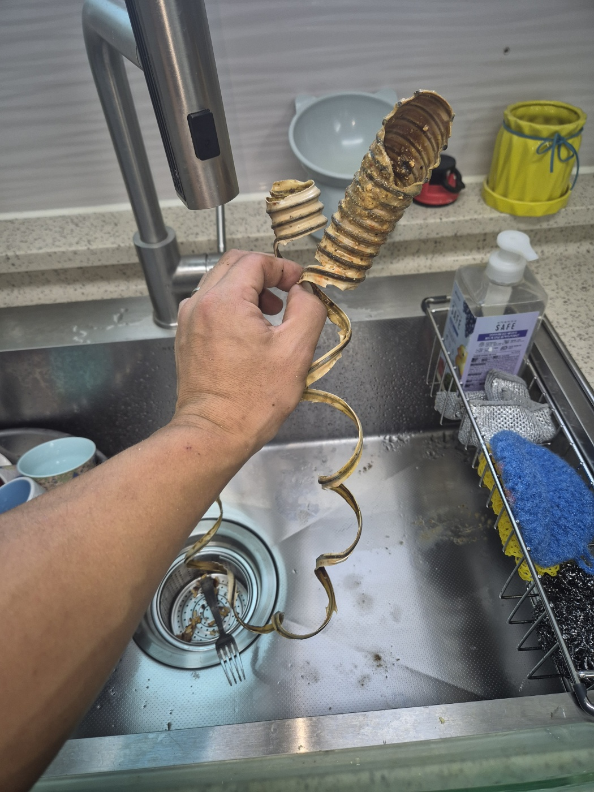
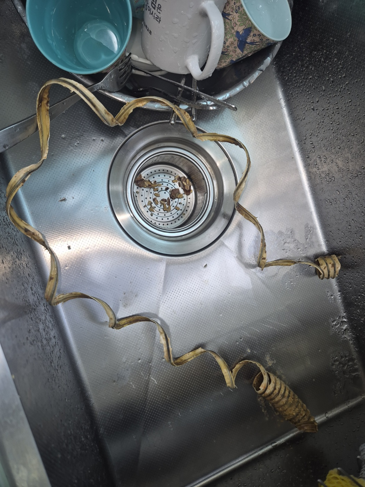
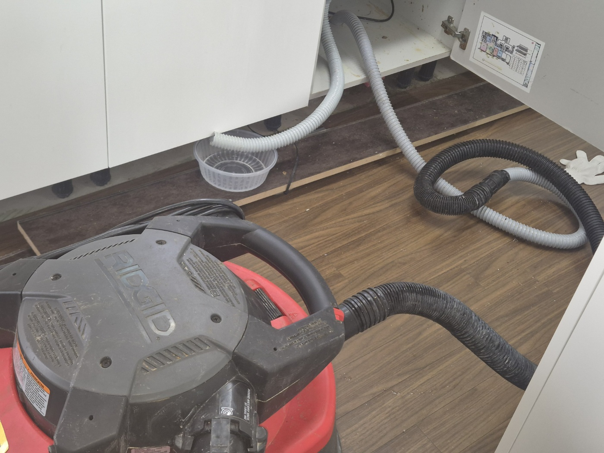
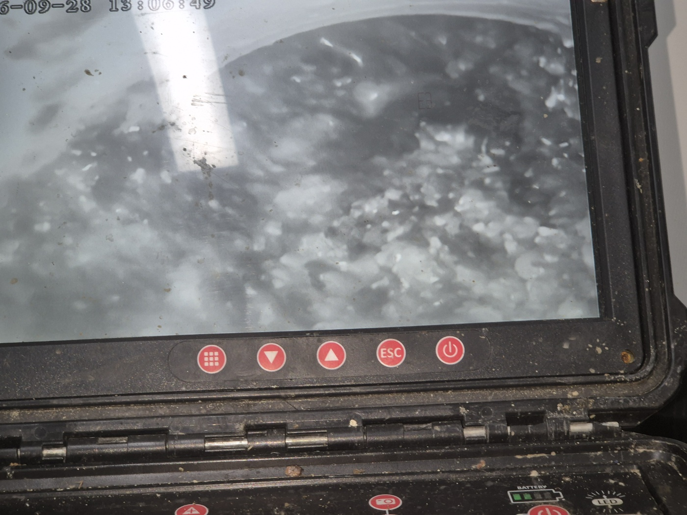
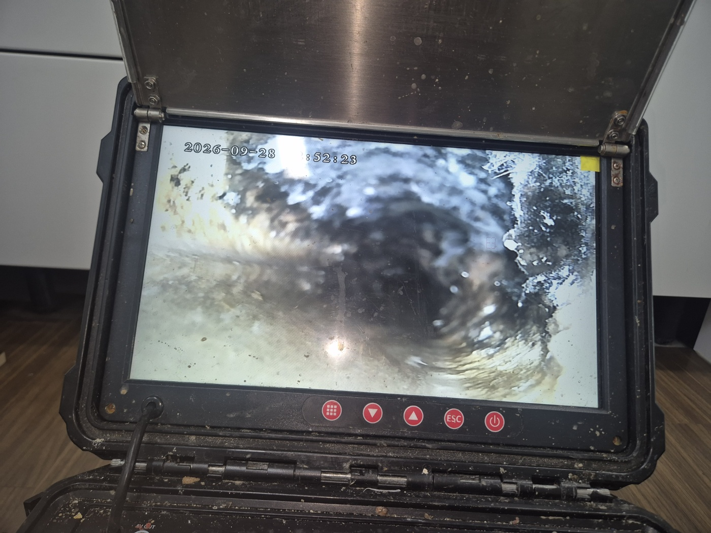

안녕하세요.. 고고고 설비입니다.. 오늘은 평택시 세교동에 있는 주택에서 싱크대막힘 신고를 받고 다녀온 현장입니다. 설거지물이 아예 안 내려간다고 하셨어요.
하부장 안쪽 온수 분배기함과 배관 연결부부터 확인했습니다. 바닥 틈 사이로 배관 케이블이 이어지는 구조라 정확한 위치부터 파악해야 했어요.

내시경 카메라를 배관 안쪽으로 넣어보니 주름관 안쪽 표면이 거칠고 찌든 상태로 확인됐습니다.

싱크대 배수구와 연결된 주름관을 직접 분리해보니, 안쪽 골마다 기름때가 두껍게 눌어붙어 거의 막혀있는 상태였습니다. 눌어붙은 찌꺼기 때문에 주름관 자체가 뻣뻣하게 굳어있었어요.

주름관을 분리한 자리에서 거름망 쪽 상태도 함께 확인했습니다. 작은 이물질 조각들이 배수구 안쪽에 남아있었어요.

안쪽 배관까지 셕션 장비로 추가 세척을 진행해 남은 이물질을 깨끗이 제거했습니다.

작업 중간중간 내시경으로 배관 안쪽 상태를 다시 확인하며 남은 이물질이 없는지 점검했습니다.


작업을 마치고 물을 내려서 정상적으로 배수되는 걸 최종 확인했습니다. 싱크대 주름관은 구조상 골 사이에 기름때가 쌓이기 쉬운 만큼, 오래 쓰셨다면 한 번씩 분리해서 상태를 확인해주시는 걸 권해드립니다.
고고고 설비는 주택, 아파트, 원룸, 상가, 공장의 생활 하수 오수 배관을 관리해 주는 업체입니다. 고고고 설비에 전화 주시면 친절상담 정확한 진단 확실한 해결로 보답해 드리겠습니다!!